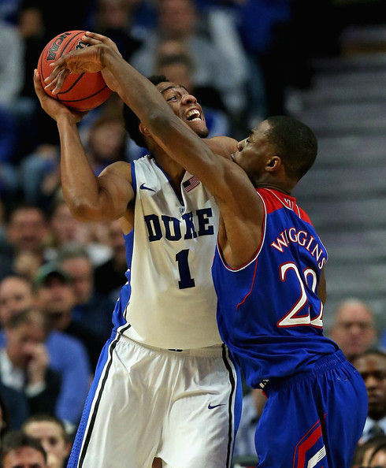
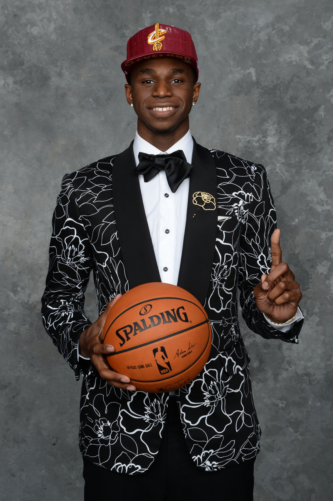
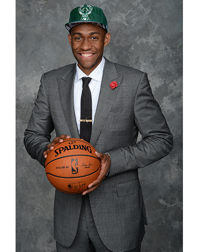

This draft has had college phenomonoms, Jabari Parker and Andrew Wiggins fighting for the first pick in the recent 2014 draft! In the end the superstar Andrew Wiggins came on top to claim the number one pick, leaving Jabari Parker second! Learn more about the five fantastic top pics in the draft!

The following information will show you the inside and out of the top 5 picks in the draft. Read more to learn interesting facts that you may not know about the players who will someday lead the NBA! The top five picks are Andrew Wiggins, Jabari Parker, Joel Embiid, Aaron Gordon, and lastly Dante Exum!

Height: 6'8
Weight: 200 lbs
Age: 19 on draft day...
Birth place: Toronto, CA
Here are some fun facts about Andrew Wiggins!
The first fun fact is that Andrew Wiggins vertical is 44 inches!!!
Another fun fact is that even though he's a top pick, he still needs to work on his game. His dribbling isn't NBA ready and his jump shot is very inconsistent.
